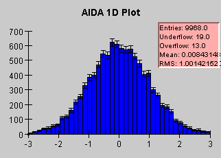
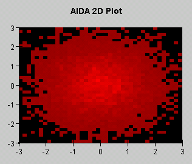

|
Colt 1.1.0 | |||||||||
| PREV PACKAGE NEXT PACKAGE | FRAMES NO FRAMES | |||||||||
See:
Description
| Class Summary | |
| Converter | Histogram conversions, for example to String and XML format; This class requires the Colt distribution, whereas the rest of the package is entirelly stand-alone. |
| FixedAxis | Fixed-width axis; A reference implementation of hep.aida.IAxis. |
| Histogram1D | A reference implementation of hep.aida.IHistogram1D. |
| Histogram2D | A reference implementation of hep.aida.IHistogram2D. |
| Histogram3D | A reference implementation of hep.aida.IHistogram3D. |
| Test | A very(!) basic test of the reference implementations of AIDA histograms. |
| Test2 | A very(!) basic test of the reference implementations of AIDA histograms |
| VariableAxis | Variable-width axis; A reference implementation of hep.aida.IAxis. |
Reference implementation of the AIDA histogram interfaces.
This package contains a simple reference implementation of the AIDA histogram interfaces. The gaol of the reference implementation is to provide a simple, easy-to-understand implementation rather than the most efficient or most functional implementation.
The reference implementations are of the hep.aida interfaces, but can be used with the adapter classes in hep.aida.flat.adapter to provide a reference implementation of the original hep.aida.flat interfaces as well.
The package contains a very incomplete test class, called Test. The entire implementation and the Test class can be downloaded in a single jar file. Once downloaded the jar file can be run using:
java -jar aidaref.jar
It will produce 4 xml files that can be read with Java Analysis Studio and should look something like this:
|  |  |
|
Colt 1.1.0 | |||||||||
| PREV PACKAGE NEXT PACKAGE | FRAMES NO FRAMES | |||||||||